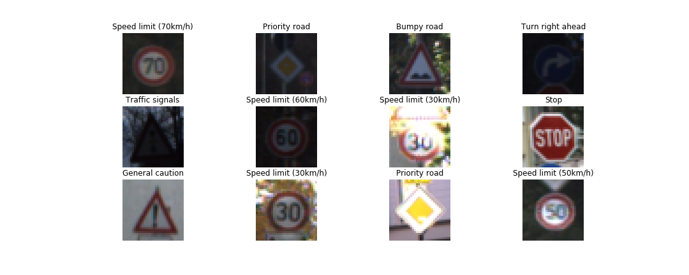
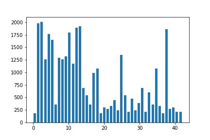
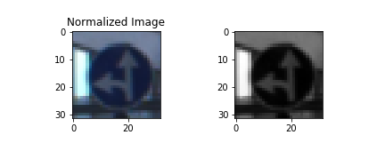
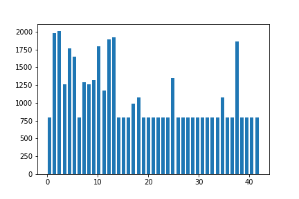
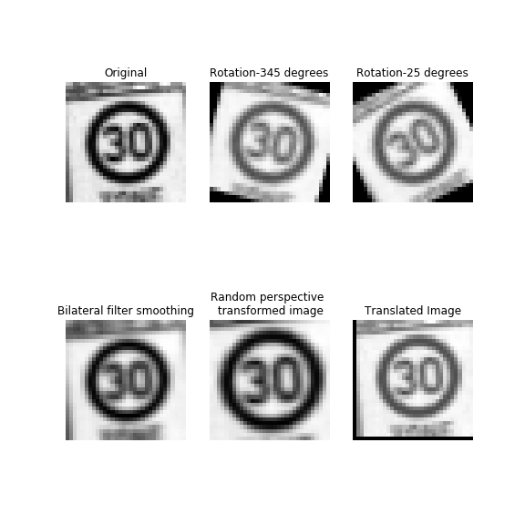
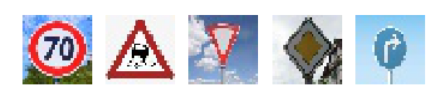
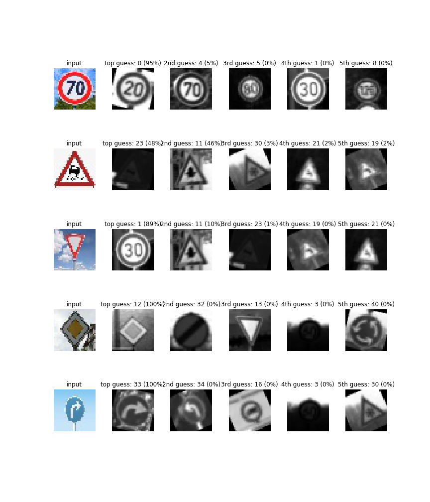

Traffic Sign Recognition
The goals / steps of this project are the following:
- Load the data set (see below for links to the project data set)
- Explore, summarize and visualize the data set
- Design, train and test a model architecture
- Use the model to make predictions on new images
- Analyze the softmax probabilities of the new images
- Summarize the results with a written report
1. Provide a Writeup / README that includes all the rubric points and how you addressed each one. You can submit your writeup as markdown or pdf. You can use this template as a guide for writing the report. The submission includes the project code.
You’re reading it! and the code is in Traffic_Sign_Classifier.ipynb.
Data Set Summary & Exploration
1. Provide a basic summary of the data set. In the code, the analysis should be done using python, numpy and/or pandas methods rather than hardcoding results manually.
I used pickle to import the training and testing files.From code blocks 1-4 we find that the
- The size of training set is 34799
- The size of test set is 12630
- The shape of a traffic sign image is (32,32,3)
- The number of unique classes/labels in the data set is 43.
2. Include an exploratory visualization of the dataset.
Here is an exploratory visualization of the data set. Following figure displays random images from the training data set and their corresponding labels.

The figure below shows the histogram of data distribution

Design and Test a Model Architecture
1. Describe how you preprocessed the image data. What techniques were chosen and why did you choose these techniques? Consider including images showing the output of each preprocessing technique. Pre-processing refers to techniques such as converting to grayscale, normalization, etc. (OPTIONAL: As described in the “Stand Out Suggestions” part of the rubric, if you generated additional data for training, describe why you decided to generate additional data, how you generated the data, and provide example images of the additional data. Then describe the characteristics of the augmented training set like number of images in the set, number of images for each class, etc.)
For preprocessing, I converted the images to grayscale because the traffic signs are distinguishable by their shapes. I also normalized the images from [0,255] to [0,1]
Here is an example of a traffic sign image before and after grayscaling.

I decided to generate additional data because as can be seen from the frequency histogram some of the classes have less that 200 images in the training set. This can cause bias towards class with more data/images. I performed data augmentation on classes that have less than 800 images.
Following is the histogram of data distribution after augmentation

To add more data to the the data set, I used the following techniques
- Rotation by 345 degrees
- Rotation by 25 degrees
- Image smoothing by bilateral filter
- Random Perspective transform
- Random translation of the image

Only the classes that have less than 800 images in the training data set are invoked in data augmentation. Code block 17 displays the data augmentation code. Above mentioned augmentation techniques are randomly applied to randomly picked images from these data sets.
After the augmentation the data is shuffled and using train_test_split module of sklearn the training data is split by the ratio of 8:2 in training and validation data sets respectively.
2. Describe what your final model architecture looks like including model type, layers, layer sizes, connectivity, etc.) Consider including a diagram and/or table describing the final model.
My final model is the LENET architure that we used in the udacity course for MNIST data set. It consisted of the following layers:
| Layer | Description |
|---|---|
| Convolution 32x32x1 | 28x28x6 |
| RELU activation | |
| Pooling 28x28x6 | 14x14x6 |
| Convolution 14x14x6 | 10x10x16 |
| RELU activation | |
| Pooling 10x10x16 | 5x5x16 |
| Flatten 5x5x16 | 400 |
| Fully connected | 400 input, 120 output |
| Flatten | |
| Fully connected | 120 input, 84 output |
| Output | 84 input, 43 output |
3. Describe how you trained your model. The discussion can include the type of optimizer, the batch size, number of epochs and any hyperparameters such as learning rate.
To train the model, I used an adam optimizer with learning rate of 0.001. I trained the classifer for 30 epochs and a batch size of 128. The code for this section is in code blocks 23-26. I kept the learning rate, adam optimizer and batch size the same as suggested by Udacity’s lectures. My model reach 96.5% accuracy in 10 epochs. However the in the first iteration of this project, I had used the provided train and validation data without augmentation or splitting. For the first iteration I got around 85% accuracy in 10 epochs, that was way below the desired limit. Therefore I played around with the number of epochs as the training parameter and for that iteration I got around 90% accuracy at the 30th epoch. Therefore in the final submitted model I choose to kept the epoch at 30 which increased my validation set accuracy from 96.5% to 98%.
4. Describe the approach taken for finding a solution and getting the validation set accuracy to be at least 0.93. Include in the discussion the results on the training, validation and test sets and where in the code these were calculated. Your approach may have been an iterative process, in which case, outline the steps you took to get to the final solution and why you chose those steps. Perhaps your solution involved an already well known implementation or architecture. In this case, discuss why you think the architecture is suitable for the current problem.
My final model results were:
- validation set accuracy of 0.980 or 98%
- test set accuracy of 0.902 or 90.2%
The simple LENET architecture fetched me around 96% accuracy on the normalized and gray scaled data.
Test a Model on New Images
1. Choose five German traffic signs found on the web and provide them in the report. For each image, discuss what quality or qualities might be difficult to classify.
Here are five German traffic signs that I found on the web:

I chose the 5 signs as I wanted to compared how the classifier would perform on diverse dataset.The 70km/hr will give me a chance to evaluate whether the model can detect speed limits accurately. I choose the slippery slope sign as it is difficult to make out in low resolution. Since the yield and priority road sign look somewhat similar I choose these two to check whether the model can discern between them.
2. Discuss the model’s predictions on these new traffic signs and compare the results to predicting on the test set. At a minimum, discuss what the predictions were, the accuracy on these new predictions, and compare the accuracy to the accuracy on the test set (OPTIONAL: Discuss the results in more detail as described in the “Stand Out Suggestions” part of the rubric).
Here are the results of the prediction:
| Image | Prediction |
|---|---|
| 70 km/hr | 20 km/hr |
| Slippery road | Slippery road |
| Yield | 30 km/hr |
| Priority road | Priority Road |
| Turn Right | Turn Right |
The model was able to correctly guess 3 of the 5 traffic signs, which gives an accuracy of 80%. This compares favorably to the accuracy on the test set of 60%
3. Describe how certain the model is when predicting on each of the five new images by looking at the softmax probabilities for each prediction. Provide the top 5 softmax probabilities for each image along with the sign type of each probability. (OPTIONAL: as described in the “Stand Out Suggestions” part of the rubric, visualizations can also be provided such as bar charts)
The code for making predictions on my final model is located in the 31st cell of the Ipython notebook.
For the first image, the model in the second guess correctly indentifies as 70km/hr sign. In case of failing yield sign the model doesn’t correctly guess in top 5.
Following image consists of top five soft max probabilities for the 5 images downloaded from web:

Dimple Bhuta
Senior Engineer – State Estimation and Control
My research interests include distributed robotics, mobile computing and programmable matter.